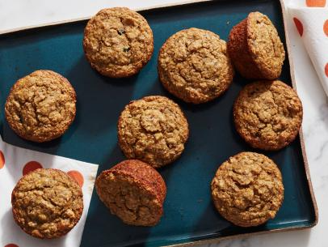
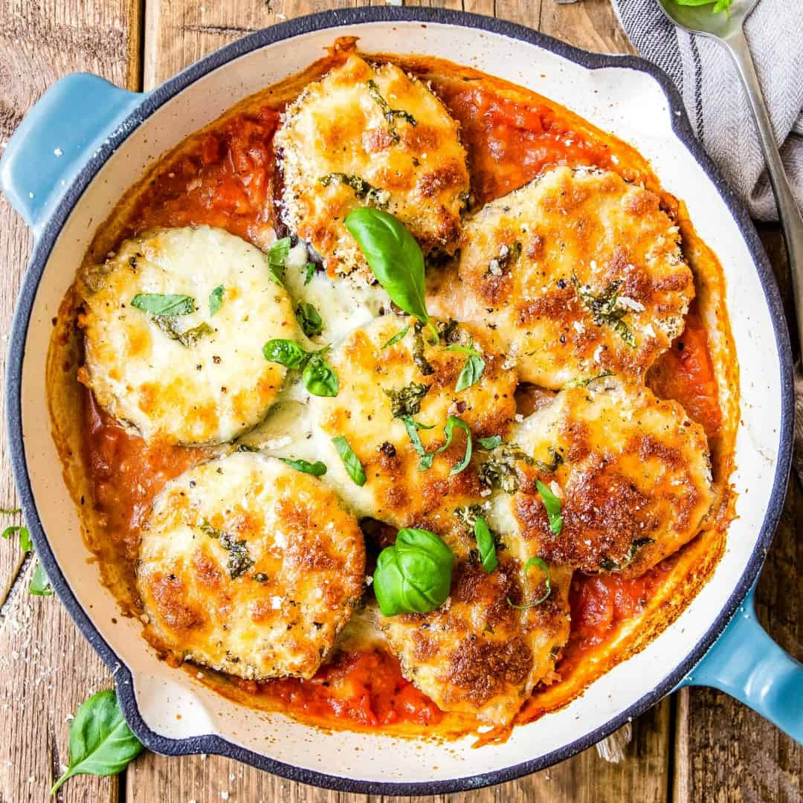

Everyday Categories
Everyday Food has developed recipes with the homecook in mind. These delicous dishes featured
on "RY Paris" call for simple ingredients that you already have in your pantry or can easily find at
local grocery stores and farmers' markets.


Breakfast Most Important Meal
Vegetarian Lunch Ideas
Cold Weather Weeknight Dinners
Healthy Recipes of The Week
This weeks top award winners to critically-acclaimed recipe gems, check out these original recipes
from home cook and professional chefs around the country.
Fajita Stuffed Peppers
Rees Breakfast Muffins
Eggplant Parmesan

Simplistic Burger
Where To Eat
This is not the aspirational fluff of Instagram wall neon; its fact. Reacent surveys have shown that a
majority of travelers consider food first when planning a trip, even ahead of where they sleep. Add to
this that people are also traveling more than ever before — earthlings logged a record-breaking 1.4
billion international trips last year — and it's safe to say that the hunger for new culinary experiences
is more ravenous than ever.
While the endlessly alluring bistros of Paris, izakayas of Tokyo, shawarma stands of Tel Aviv, and
tasting menus of Mexico City will always top many people's lists of cravings, we're continually on the
lookout for something new to fill our bellies, our passports, and our feeds.
Best Sandwiches in America
50 States of Pizza
City Guides